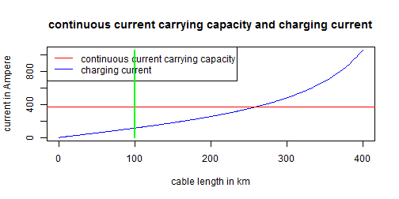

- Context
- Cable Parameters
- Charging Current
ME
f <- 50 # system frequency in Hertz
Um <- 24 # highest voltage for equipment Um in kV
X1 <- 0.122 # positive sequence reactance in ohm per km
C1 <- 0.254 # positive sequence capacitance in microfarad per km
Id <- 366 # continuous current carrying capacity in Ampere
ZW1 <- sqrt(X1/(2*pi*f*C1*1e-6)) # characteristic impedance in Ohms
beta1 <- sqrt(X1*2*pi*f*C1*1e-6)*180/pi*100 # propagation constant in degrees per 100km
Pnat <- Um^2/ZW1 # natural loading in Megawatts
c(ZW1, beta1, Pnat)
## [1] 39.10 17.88 14.73
l <- 100 # length in km
Ic <- 1/ZW1*tan(beta1/180*pi/100*l)*Um*1000/sqrt(3) # charging current in Ampere
